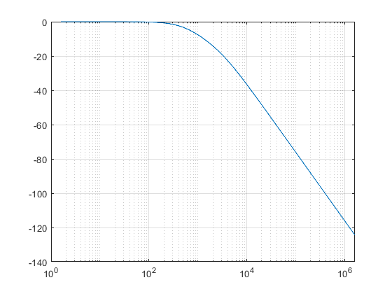

R1 = 200/3; R2 = 250; C1 = .000001; %10^-6 C2 = .000001; %10^-6 G = [1, 0, 0; -1/R1, 1/R1+1/R2, -1/R2; 0, -1/R2, (1/R2)]; C = [0, 0, 0; 0, C1, 0; 0, 0, C2]; b =[1; 0; 0]; w=0:10:10e6; semilogx((w/(2*pi)), freqresp4(G,C,b,w)) grid on % xscale log function F=freqresp4(G,C,b,w) mag=zeros(3,1); % We need to initialize vector mag, in order not % to confuse Matlab. for k=1:length(w) omega=w(k); % Omega is the next frequency in vector w. A=G+i*omega*C; x=A\b; % Vector x contains the solution of the node voltage % equations in complex form. mag=[mag abs(x)]; % The function abs(x) computes the magnitudes of all voltages. % These magnitudes are stored as a new column in matrix mag. end % Each column of matrix mag now contains voltage magnitudes computed % at a particular frequency. Note, however, that the first column of % this matrix is essentially redundant. It is a vector of zeros that % serves only as a place holder. V3=mag(3,2:length(w)+1); % Since we are interested only in V3, we will extract row 3 of matrix % mag (and ignore the first column). F=20*log10(V3); end
